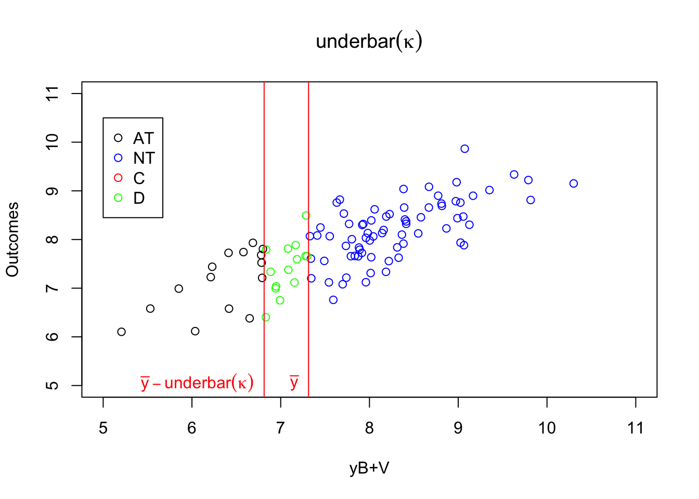
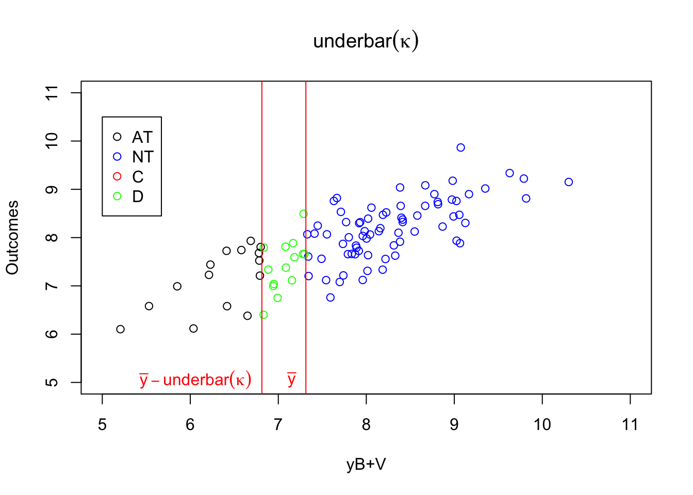

Chapter 4 Natural Experiments
Natural Experiments are situations due to the natural course of events that approximate the conditions of a randomized controlled trial. In the economists’ toolkit, we generally make a distinction between:
- Instrumental variables (IV), that rely on finding a plausibly exogeneous source of variation in treatment intake.
- Regression Discontinuity Designs (RDD), that exploit a discontinuity in the eligibility to the treatment.
- Difference In Differences (DID), that make use of the differential exposure of some groups to the treatment of interest over time.
4.1 Instrumental Variables
Instrumental Variables rely on finding a plausibly exogeneous source of variation in treatment intake. In the simple case of a binary instrument, the identification and estimation parts are actually identical to Encouragements designs in RCTs, that we have already studied in Section 3.4. As a consequence, unless we make very strong assumptions, an IV design is going to recover a Local Average Treatment Effect. Our classical assumptions are going to show up again: Independence, Exclusion Restriction, Monotonicity.
- Distance to college or to school for studying the impact of college or school enrollement on education, earnings and other outcomes.
- Random draft lottery number for investigating the impact of military experience on earnings and other outcomes.
- Randomized encouragement to participate in order to study the impact of a program.
Remark. The crucial part of an IV design is to justify the credibility of the exclusion restriction and independence assumptions. It is in general very difficult to justify these assumptions, especially the exclusion restriction assumption. In the examples above, one could argue that schools or colleges might be built where they are necessary, i.e. close to destitute populations, or, on the contrary, that they are built far from difficult neighbourhoods. As soon as distance to school becomes correlated with other determinants of schooling, such as parental income and education, the independence assumption is violated.
Even if school placement is truly independent of potential education and earnings outcomes at first, parents, by choosing where to live, will sort themselves such as the parents that pay more attention to education end up located closer to school. As a consequence, the independence assumption might be violated again.
Even when the instrumen is truly random, such as a draft lottery number, and thus the independence assumption seems fine, the instrument may directly affect the outcomes by other ways than the treatment of interest. For example, receiving a low draft lottery number makes one more likely to be drafted. In response, one might decide to increase his length of stay in college in order to use the waiver for the draft reserved for students. If receiving a low draft lottery number increases the number of years of education, and in turn subsequent earnings, then the exclusion restriction assumption is violated.In this section, I’m going to denote \(Z_i\) a binary instrument that can either take value \(0\) or \(1\). In general, we try to reserve the value \(1\) for the instrument value that increases participation in the treatment of interest. In our examples, that would be when for example, the distance to college is low, the draft lottery number is low, or someone receives an encouragement to enter a program.
4.1.1 An example where Monotonicity does not hold
Since Monotonicity is going to play such a particular role, and since we have already explored this assumption a little in Chapter 3, I am going to use as an example a model where the Monotonicity assumption actually does not hold. It will, I hope, help us understand better the way Monotonicity works and how it interacts with the other assumptions. The key component of the model that makes Monotonicity necessary is the fact that treatment effects are heterogeneous and correlated with participation in the treatment. We’ll see later that Monotonicity is unnecessary when treatment effects are orthogonal to take up.
\[\begin{align*} D_i & = \uns{y_i^B+\kappa_i Z_i + V_i\leq\bar{y}} \\ Z_i & \sim\mathcal{N}(0,\sigma^2_{\mu}+\sigma^2_{U}) \\ Z_i & \sim\mathcal{B}(p_Z) \\ Z_i & \Ind (Y_i^0,Y_i^1,V_i) \\ \kappa_i & = \begin{cases} -\bar{\kappa} & \text{ if } \xi = 1 \\ \underline{\kappa} & \text{ if } \xi = 0 \end{cases} \\ \xi & \sim\mathcal{B}(p_{\xi}) \\ \xi & \Ind (Y_i^0,Y_i^1,V_i,Z_i) \end{align*}\]
Give the complete model (\(Y_i\) as well). Explain that we use a fuzzy eligibility rule.
The key component of the model that generates a failure of Monotonicity is the coefficient \(\kappa_i\), that determines how individuals’ participation into the program reacts to the instrument \(Z_i\). \(\kappa_i\) is a coefficient whose value varies accross the population. In my simplified model, \(\kappa_i\) can take only two values, \(-\bar{\kappa}\) or \(\underline{\kappa}\). When \(-\bar{\kappa}\) and \(\underline{\kappa}\) have opposite signs (let’s say \(-\bar{\kappa}<0\) and \(\underline{\kappa}>0\)), then individuals with \(\kappa_i=-\bar{\kappa}\) are going to be more likely to enter the program when they receive an encouragement (when \(Z_i=1\)) while individuals with \(\kappa_i=\underline{\kappa}\) will be less likely to enter the program when \(Z_i=1\). When \(-\bar{\kappa}\) and \(\underline{\kappa}\) have different signs, we have four types of reactions when the instrumental variable moves from \(Z_i=0\) to \(Z_i=1\), holding everything else constant. These four types of reactions define four types of individuals:
- Always takers (\(T_i=a\)): individuals that participate in the program both when \(Z_i=0\) and \(Z_i=1\).
- Never takers (\(T_i=n\)): individuals that do not participate in the program both when \(Z_i=0\) and \(Z_i=1\).
- Compliers (\(T_i=c\)): individuals that do not participate in the program when \(Z_i=0\) but that participate in the program when \(Z_i=1\) .
- Defiers (\(T_i=d\)): individuals that participate in the program when \(Z_i=0\) but that do not participate in the program when \(Z_i=1\) .
In our model, these four types are a function of \(y_i^B+V_i\) and \(\kappa_i\). In order to see this let’s define, as in Section 3.4, \(D^z_i\) the participation decision of individual \(i\) when the instrument is exogenously set to \(Z_i=z\), with \(z\in\left\{0,1\right\}\). When \(\kappa_i=-\bar{\kappa}<0\), we have three types of reactions to the instrument. It turns out that each of type can be defined by where \(y_i^B+V_i\) lies with respect to a series of thresholds:
- Always takers (\(T_i=a\)) are such that \(D^1_i=\uns{y_i^B-\bar{\kappa} + V_i\leq\bar{y}}=1\) and \(D^0_i=\uns{y_i^B + V_i\leq\bar{y}}=1\), so that they actually are such that: \(y_i^B+V_i\leq\bar{y}\). This is because \(y_i^B+V_i\leq\bar{y} \Rightarrow y_i^B+V_i\leq\bar{y}+\bar{\kappa}\), when \(\bar{\kappa}>0\).
- Never takers (\(T_i=n\)) are such that \(D^1_i=\uns{y_i^B-\bar{\kappa} + V_i\leq\bar{y}}=0\) and \(D^0_i=\uns{y_i^B + V_i\leq\bar{y}}=0\), so that they actually are such that: \(y_i^B+V_i>\bar{y}+\bar{\kappa}\). This is because \(y_i^B+V_i>\bar{y}+\bar{\kappa} \Rightarrow y_i^B+V_i>\bar{y}\), when \(\bar{\kappa}>0\).
- Compliers (\(T_i=c\)) are such that \(D^1_i=\uns{y_i^B-\bar{\kappa} + V_i\leq\bar{y}}=1\) and \(D^0_i=\uns{y_i^B + V_i\leq\bar{y}}=0\), so that they actually are such that: \(\bar{y}<y_i^B+V_i\leq\bar{y}+\bar{\kappa}\).
When \(\kappa_i=\underline{\kappa}<0\), we have three types defined by where \(V_i\) lies with respect to a series of thresholds:
- Always takers (\(T_i=a\)) are such that \(D^1_i=\uns{y_i^B+\underline{\kappa} + V_i\leq\bar{y}}=1\) and \(D^0_i=\uns{y_i^B + V_i\leq\bar{y}}=1\), so that they actually are such that: \(y_i^B+V_i\leq\bar{y}-\underline{\kappa}\). This is because \(y_i^B+V_i\leq\bar{y}-\underline{\kappa} \Rightarrow y_i^B+V_i\leq\bar{y}\), when \(\underline{\kappa}>0\).
- Never takers (\(T_i=n\)) are such that \(D^1_i=\uns{y_i^B-\bar{\kappa} + V_i\leq\bar{y}}=0\) and \(D^0_i=\uns{y_i^B + V_i\leq\bar{y}}=0\), so that they actually are such that: \(y_i^B+V_i>\bar{y}\). This is because \(y_i^B+V_i>\bar{y} \Rightarrow y_i^B+V_i\leq\bar{y}-\underline{\kappa}\), when \(\underline{\kappa}>0\).
- Defiers (\(T_i=d\)) are such that \(D^1_i=\uns{y_i^B+\underline{\kappa} + V_i\leq\bar{y}}=0\) and \(D^0_i=\uns{y_i^B + V_i\leq\bar{y}}=1\), so that they actually are such that: \(\bar{y}-\underline{\kappa}<V_i+y_i^B\leq\bar{y}\).
Let’s visualize how this works in a plot. Before that, let’s generate some data according to this process. For that, let’s choose values for the new parameters.
param <- c(8,.5,.28,1500,0.9,0.01,0.05,0.05,0.05,0.1,0.1,7.98,0.5,1,0.5,0.9)
names(param) <- c("barmu","sigma2mu","sigma2U","barY","rho","theta","sigma2epsilon","sigma2eta","delta","baralpha","gamma","baryB","pZ","barkappa","underbarkappa","pxi")set.seed(1234)
mu <- rnorm(N,param["barmu"],sqrt(param["sigma2mu"]))
UB <- rnorm(N,0,sqrt(param["sigma2U"]))
yB <- mu + UB
YB <- exp(yB)
Ds <- rep(0,N)
Z <- rbinom(N,1,param["pZ"])
xi <- rbinom(N,1,param["pxi"])
kappa <- ifelse(xi==1,-param["barkappa"],param["underbarkappa"])
V <- rnorm(N,0,sqrt(param["sigma2mu"]+param["sigma2U"]))
Ds[yB+kappa*Z+V<=log(param["barY"])] <- 1
epsilon <- rnorm(N,0,sqrt(param["sigma2epsilon"]))
eta<- rnorm(N,0,sqrt(param["sigma2eta"]))
U0 <- param["rho"]*UB + epsilon
y0 <- mu + U0 + param["delta"]
alpha <- param["baralpha"]+ param["theta"]*mu + eta
y1 <- y0+alpha
Y0 <- exp(y0)
Y1 <- exp(y1)
y <- y1*Ds+y0*(1-Ds)
Y <- Y1*Ds+Y0*(1-Ds)We can now define the types variable \(T_i\):
D1 <- ifelse(yB+kappa+V<=log(param["barY"]),1,0)
D0 <- ifelse(yB+V<=log(param["barY"]),1,0)
AT <- ifelse(D1==1 & D0==1,1,0)
NT <- ifelse(D1==0 & D0==0,1,0)
C <- ifelse(D1==1 & D0==0,1,0)
D <- ifelse(D1==0 & D0==1,1,0)
Type <- ifelse(AT==1,'a',
ifelse(NT==1,'n',
ifelse(C==1,'c',
ifelse(D==1,'d',""))))
data.non.mono <- data.frame(cbind(Type,C,NT,AT,D1,D0,Y,y,Y1,Y0,y0,y1,yB,alpha,U0,eta,epsilon,Ds,kappa,xi,Z,mu,UB))#ggplot(data.non.mono, aes(x=V, y=yB),color(as.factor(Type))) +
# geom_point(shape=1)+
# facet_grid(.~ as.factor(kappa))
plot(yB[AT==1 & kappa==-param["barkappa"]]+V[AT==1 & kappa==-param["barkappa"]],y[AT==1 & kappa==-param["barkappa"]],pch=1,xlim=c(5,11),ylim=c(5,11),xlab='yB+V',ylab="Outcomes")
points(yB[NT==1 & kappa==-param["barkappa"]]+V[NT==1 & kappa==-param["barkappa"]],y[NT==1 & kappa==-param["barkappa"]],pch=1,col='blue')
points(yB[C==1 & kappa==-param["barkappa"]]+V[C==1 & kappa==-param["barkappa"]],y[C==1 & kappa==-param["barkappa"]],pch=1,col='red')
points(yB[D==1 & kappa==-param["barkappa"]]+V[D==1 & kappa==-param["barkappa"]],y[D==1 & kappa==-param["barkappa"]],pch=1,col='green')
abline(v=log(param["barY"]),col='red')
abline(v=log(param["barY"])+param['barkappa'],col='red')
#abline(v=log(param["barY"])-param['underbarkappa'],col='red')
text(x=c(log(param["barY"]),log(param["barY"])+param['barkappa']),y=c(5,5),labels=c(expression(bar('y')),expression(bar('y')+bar(kappa))),pos=c(2,4),col=c('red','red'),lty=c('solid','solid'))
legend(5,10.5,c('AT','NT','C','D'),pch=c(1,1,1,1),col=c('black','blue','red','green'),ncol=1)
title(expression(kappa=bar(kappa)))
plot(yB[AT==1 & kappa==param["underbarkappa"]]+V[AT==1 & kappa==param["underbarkappa"]],y[AT==1 & kappa==param["underbarkappa"]],pch=1,xlim=c(5,11),ylim=c(5,11),xlab='yB+V',ylab="Outcomes")
points(yB[NT==1 & kappa==param["underbarkappa"]]+V[NT==1 & kappa==param["underbarkappa"]],y[NT==1 & kappa==param["underbarkappa"]],pch=1,col='blue')
points(yB[C==1 & kappa==param["underbarkappa"]]+V[C==1 & kappa==param["underbarkappa"]],y[C==1 & kappa==param["underbarkappa"]],pch=1,col='red')
points(yB[D==1 & kappa==param["underbarkappa"]]+V[D==1 & kappa==param["underbarkappa"]],y[D==1 & kappa==param["underbarkappa"]],pch=1,col='green')
abline(v=log(param["barY"]),col='red')
#abline(v=log(param["barY"])-param['barkappa'],col='red')
abline(v=log(param["barY"])-param['underbarkappa'],col='red')
text(x=c(log(param["barY"]),log(param["barY"])-param['underbarkappa']),y=c(5,5),labels=c(expression(bar('y')),expression(bar('y')-underbar(kappa))),pos=c(2,2),col=c('red','red'),lty=c('solid','solid'))
legend(5,10.5,c('AT','NT','C','D'),pch=c(1,1,1,1),col=c('black','blue','red','green'),ncol=1)
title(expression(kappa=underbar(kappa))) 

Figure 4.1: Types
As Figure 4.1 shows how the different types interact with \(\kappa_i\). When \(\kappa_i=-\bar{\kappa}\), individuals with \(y_i^B+V_i\) below \(\bar{y}\) always take the program. Even when \(Z_i=1\) and \(\bar{\kappa}\) is subtracted from their index, it is still low enough so that they get to participate. When \(y_i^B+V_i\) is in between \(\bar{y}\) and \(\bar{y}+\bar{\kappa}\), the individuals are such that their index without subtracting \(\bar{\kappa}\) is above \(\bar{y}\), but it is below \(\bar{y}\) when \(\bar{\kappa}\) is subtracted from it. These individuals participate when \(Z_i=1\) and do not participate when \(Z_i=0\): they are compliers. Individuals such that \(y_i^B+V_i\) is above \(\bar{y}+\bar{\kappa}\) will have an index above \(\bar{y}\) whether we substract \(\bar{\kappa}\) from it or not. They are never takers.
When \(\kappa_i=\underline{\kappa}\), individuals with \(y_i^B+V_i\) below \(\bar{y}-\underline{\kappa}\) always take the program. Even when \(Z_i=0\) and \(\underline{\kappa}\) is not subtracted from their index, it is still low enough so that they get to participate. When \(y_i^B+V_i\) is in between \(\bar{y}-\underline{\kappa}\) and \(\bar{y}\), the individuals are such that their index without adding \(\underline{\kappa}\) is below \(\bar{y}\), but it is above \(\bar{y}\) when \(\underline{\kappa}\) is added to it. These individuals participate when \(Z_i=0\) and do not participate when \(Z_i=1\): they are defiers. Individuals such that \(y_i^B+V_i\) is above \(\bar{y}\) will have an index above \(\bar{y}\) whether we add \(\underline{\kappa}\) from it or not. They are never takers.
4.1.2 Identification
We need several assumptions for identification in an Instrumental Variable framework. We are going to explore two sets of assumption that secure the identification of two different parameters:
- The Average Treatment Effect on the Treated (\(TT\)): identification will happen through the assumption of independence of treatment effects from potential treatment choice
- The Local Average Treatment Effect (\(LATE\))
4.1.2.1 Assumptions
Definition 4.1 (First Stage Full Rank) We assume that the instrument \(Z_i\) has a direct effect on treatment participation:
\[\begin{align*} \Pr(D_i=1|Z_i=1)\neq\Pr(D_i=1|Z_i=0). \end{align*}\]means.IV <- c(mean(Ds[Z==0]),mean(Ds[Z==1]),mean(y0[Z==0]),mean(y0[Z==1]),mean(y[Z==0]),mean(y[Z==1]),0,1)
means.IV <- matrix(means.IV,nrow=2,ncol=4,byrow=FALSE,dimnames=list(c('Z=0','Z=1'),c('D','y0','y','Z')))
means.IV <- as.data.frame(means.IV)
Figure 4.2: Proportion of participants as a function of \(Z_i\)
Figure 4.2 shows that the proportion of treated when \(Z_i=1\) in our sample is equal to 0.55 while the proportion of treated when \(Z_i=0\) is equal to 0.33, in accordance with Assumption 4.1.
Give result in the population.